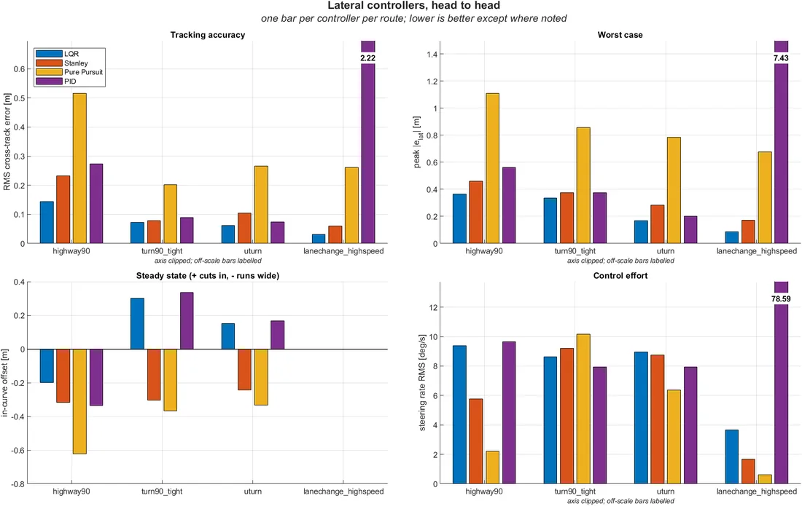

ADAS Developer at PEM Technologies, working on prediction, planning and control for an autonomous driving stack and the scenario-based validation around it. NIT Surat EE graduate who builds SLAM, estimators and controllers from scratch, because I like knowing why things work.
In first grade I heard someone had built a solar-powered car. My thought wasn't "that's cool". It was "I'll build a solar plane one day."
That instinct stuck. I'm drawn to machines that have to perceive, decide and act in a world that doesn't follow a script, and I'd rather understand every layer than glue packages together. That's why I wrote EKF-SLAM and Pose Graph SLAM from scratch, benchmarked controllers head to head, and reimplemented learned odometry straight from the paper.
Today that means autonomous driving: planning and control, and proving it's safe with scenario-based testing grounded in SOTIF, ISO 34502, UN R157 and Euro NCAP. Next, I want to take it to space.
RoleADAS Developer, PEM Technologies
SinceJul 2026 (full-time)
Based inBangalore, India
FocusPlanning, control, V&V, SLAM
StackC++, Python, ROS 2, CARLA
EducationB.Tech EE, NIT Surat · Graduated 2026
// experience
Where I've built things
ADAS Developer · PEM Technologies
JUL 2026 – PRESENT · BANGALORE
Developed prediction, planning and control for the company's autonomous driving stack, with an independent AEB layer and a gRPC link to CARLA, validated closed-loop at 20 Hz on AEB, cut-in, vulnerable-road-user and occlusion scenarios.
Building a scenario concretisation prototype that turns PEGASUS-style logical scenarios (parameter ranges) into concrete, physically consistent test cases for simulation.
Defining per-case avoidability labels from UN R157, ISO 34502 and Euro NCAP references.
PredictionPlanningControlAEBgRPCCARLAPEGASUS
AD Platform Intern · PEM Technologies
JAN 2026 – JUN 2026 · BANGALORE
Built the ODD-based scenario generation pipeline (Python, FastAPI, PostgreSQL): from 145 ODD elements, removed about 48% of combinations as physically infeasible and wrote the rest up as PEGASUS logical scenarios built around edge-case SOTIF triggering conditions.
Wrote early planning and control for the AD stack in CARLA (path tracking, lane changes, obstacle avoidance with replanning) and built its KPI logging.
Built a 3D LiDAR SLAM and navigation demo for off-road vehicles in ROS 2 and Gazebo for a customer demo.
ODDSOTIFFastAPIPostgreSQL3D LiDAR SLAM
Intern, Autonomous Mobile Robotics · Novus HiTech Robotics
MAY 2025 – JUL 2025 · GURUGRAM
Tested and tuned an Extended Kalman Filter in roscpp fusing wheel encoder and IMU data, with Madgwick and 3rd-order low-pass filtering of IMU noise.
Measured 2 cm/m odometry drift, down from 15 cm/m, and 85–90% accuracy in Gazebo and on the warehouse robot.
EKFroscppIMUSensor fusion
// projects
Built from first principles
No black boxes. Each one is implemented, measured and documented.

CARLA · LIVE RUN + RESULTS
Path tracking · MATLAB / Simulink / CARLA
CARLA-MATLAB Control Bench
PID, Pure Pursuit, Stanley and LQR compared head to head over four scenarios: a 174 m radius highway curve, a 4.9 m junction turn, a hairpin and a double lane change. LQR uses a bicycle model with a per-speed Riccati gain schedule. Curvature-based speed profiling, plus the same controllers driven from Simulink over UDP at 20 Hz.
2D LiDAR and odometry pose graph with ICP scan matching for loop closure, optimised with Gauss-Newton on TurtleBot3 in Gazebo, correcting drift from injected odometry noise.
Extended Kalman Filter fusing wheel odometry and 2D LiDAR for joint pose and landmark estimation, with a custom two-layer nested-loop matcher aligning LiDAR edge features to cylindrical landmarks.
A 1-D ResNet that regresses velocity from raw IMU windows (RoNIN-style, reimplemented from the paper), integrated into a trajectory and benchmarked against classical double integration on OxIOD.
Proximal Policy Optimization with GAE on a custom differential-drive environment with LiDAR-style ray casting, plus DQN, Double DQN, A2C and REINFORCE implementations. No RL frameworks.
rclpy and rclcpp nodes for 2D LiDAR, GPS, IMU and webcam navigation, verified in Gazebo, with YOLOv8n detections fused with LiDAR depth for real-time arrow recognition and 5.8 GHz long-range comms.
Simulation-based self-driving car with a Pixy camera and 2D LiDAR. I wrote the main driving node: line following from camera edge vectors, LiDAR obstacle avoidance, and steering and speed control.